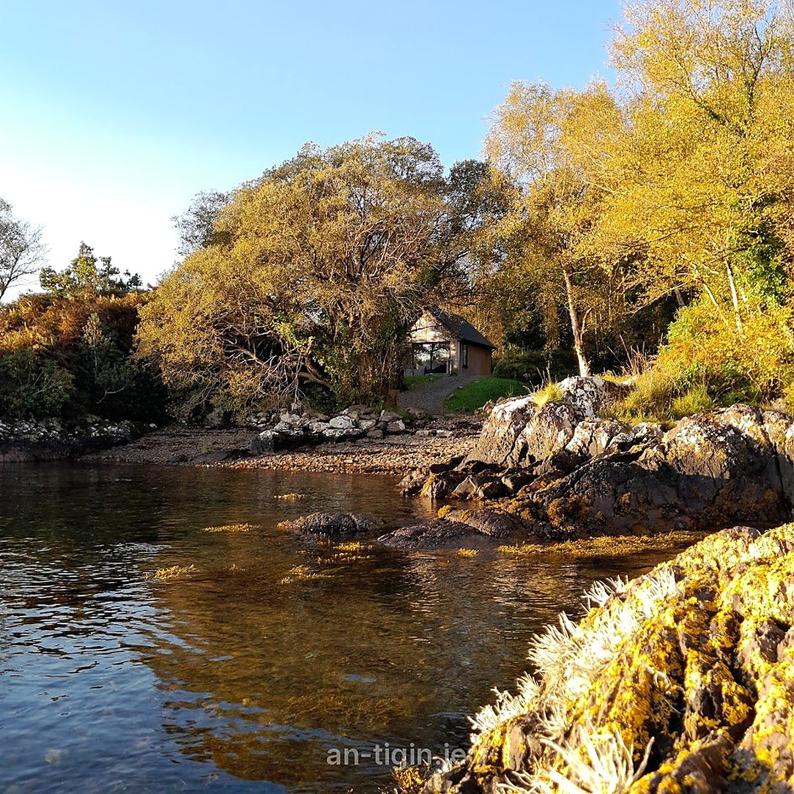
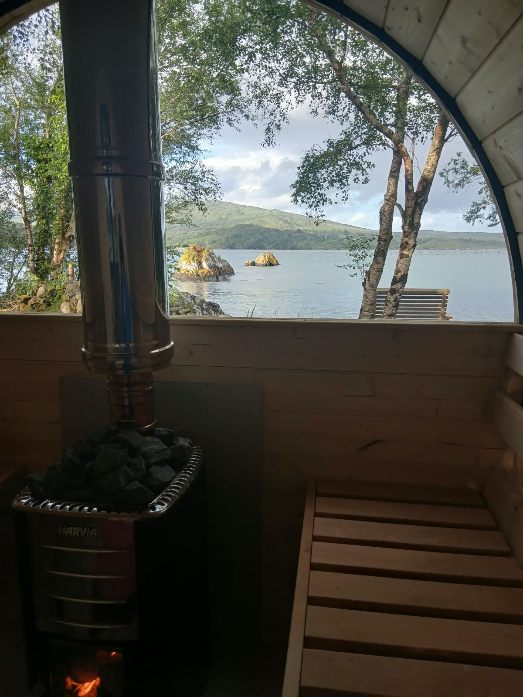

The Cabin
A private seaside cabin on Bantry Bay.
Our story
We're Geri and Shane.
An Tigín is our little off-grid cabin on the Wild Atlantic Way, just 3km from the picturesque village of Glengarriff in Co. Cork.
It's an idyllic escape from the hustle and bustle of everyday life, a place to unplug and recharge your mind and body. Whether it's a calming swim and a sauna, or simply curling up with a good book, we hope you'll find An Tigín the perfect place to unwind and connect with yourself and nature.

Living simply, off-grid
What you'll find.
We take real pride in our eco-friendly approach. There's no mains electricity or Wi-Fi, but here's what's waiting for you:
- ✓4G/5G mobile coverage if you need to stay connected
- ✓A portable power bank and LED lighting, plus a spot to charge your devices
- ✓Hot water for washing and showering
- ✓A composting toilet
- ✓Simple cooking: a single-ring gas cooker
- ✓Pure well water, naturally free from fluoride and chemicals
- ✓A sauna and the sea for a calming swim
We don't provide kayaks, but there are local guides if you'd like to book a trip with them.
★ 5.0from 100 guest reviews on Airbnb
SuperhostAirbnb Guest Favourite, 3 years hosting
2 guests1 king-size bed · 1 bathroom
Good to know: An Tigín is an adults-only retreat, so we're unable to accommodate children or pets.